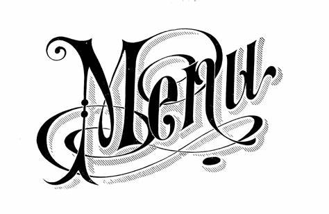
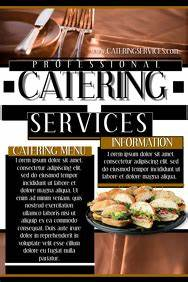

PIZZA STREET
Pizza street :Delivering Happiness
What�s better than having a crispy melty pizza, you ask?
Having that crispy and melty pizza in the comfort of your own home with the ones you love, we say.
With Pizza street it is always �Rishton ka time�. Whether it's a treat for your promotion, a kid topping his class or winning the heart of your wife
who is too tired to cook after a long day at work! A cheesy slice of the best pizza is all one needs to put things into perspective and start any celebration.
Plus, you do not even need to rush to the restaurant to have one now. A call, a few clicks on our website or a few touches on the mobile screen is all you
have to do to have that tempting, light-on-the-pocket pizza at your doorstep.
There is something for everyone here. The vegetarians, non-vegetarians, the sides� lovers and also the ones who love to have something sweet by the
time they reach the last bite of the last slice of pizza slice.
  
What We Need - More Choice. More Fun.
No matter what the situation, pizza always helps. Especially a pizza that gives you the freedom to choose your toppings - from paneer, crisp capsicum, onion, grilled
mushroom, golden corn, black olives, fresh tomato, red paprika, jalapeno, paneer tikka and extra cheese to non-veg toppings such as pepper barbeque chicken,
peri-peri chicken, grilled chicken rasher, chicken sausage or chicken tikka- the options are almost endless, anything and everything you can think of that too on top
of the crust of your choice - New hand-tossed crust, wheat thin crust, cheese burst crust, classic hand-tossed crust or a fresh pan pizza. Because just like a pizza, Pizza street understands you.
And to shoo away those end-of-the-month blues while placing your order with our pizza restaurant, check out the everyday pizzas from pizza mania combos with everyday
value offer of 2 pizzas starting at just ?99 (regular size) and ?199 (medium size) each.
The Promise Of 20-Minute Delivery
The Promise Of 30-Minute Delivery
The icing on the cake or more aptly the extra cheese on your already fabulous pizza is that Pizza street takes only Twenty min.for its pizza delivery service. Don�t believe us?
Time it if you please. With 1250+ stores present all over India, you can have a Pizza street pizza even while traveling on a train. Yes, you are reading it right, you can enjoy pizza
on train too.
So stop googling for the �pizza shops near me� and order from your nearest pizza outlet to have a hot box of pizza on your table in the next 20 minutes, or berth at the next halting station.